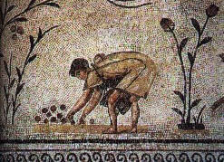

O crescimento de Roma não foi resultado de um único fator, mas de uma combinação de estratégias bem-sucedidas e condições favoráveis.
A localização estratégica, a eficiência militar, as alianças políticas, as inovações em engenharia, o sistema legal, a economia robusta,
a integração cultural e a liderança visionária foram todos componentes essenciais para a ascensão e o sucesso de Roma como uma potência global.
Esses fatores permitiram a Roma não apenas expandir seu território, mas também estabelecer sum império que deixaria um legado duradouro na história mundial.
Aqui exploraremos alguns dos principais fatores para tamanho poder e ascensão.
Escravidão
Roma foi crescendo a partir das guerras de conquistas e dos seguintes prisioneiros de guerra,
que se tornariam esravos, os principais responsáveis para a movimentação, não só da economia, mas de toda Roma.
Os números de escravizados chega ser significantes, trinta e cinco por cento da população, o que chega a ser mais de dois milhões de pessoas.
Quando uma pessoa se tornava escravo de alguém ela passava a exercer diversas funções para o seu patrão.
Assim, passavam a atuar não só na agricultura como também nas manufaturas e na vida administrativa. Atuavam também como
gladiadores e como professores, visto que havia muitos letrados de outros territórios que foram conquistados durante as guerras.
Realizavam diversas tarefas para seus patrões. A relação entre patrão e escravos era também marcada por relações sexuais.
Escravos servindo de transporte urbano

Escravo romano atuando na cultura de azeitona.
Além de prisioneiros de guerra, havia outras formas de tráfico humano na Roma antiga,
tais como pirataria, comércio e a subjugação de filhos de outros cativos, pois
uma criança nascida de uma mãe em cativeiro automaticamente ganhava esta condição,
independente de quem fosse o pai. Os mercados de escravos existiam nas maiores cidades, onde em praça pública,
os cativos desfilavam com placas em torno do pescoço, que fazia propaganda de suas qualidades
para atrair possíveis compradores.
A propriedade de escravos era mais amplamente disseminada pelos ricos. Um modesto empresário romano,
um artesão ou um militar veterano talvez possuíssem um ou dois escravos, enquanto nos casos dos mais
ricos estes números poderiam se elevar à centenas, pois para a elite, quanto mais (e de preferência exóticos)
alguém tivesse, melhor. O grupo de escravos agrícolas e aquelas que trabalhavam nas minas eram provavelmente
os que dispunham das piores condições de vida e trabalho. Os de lavoura geralmente ficavam confinados em barracões em
condições precárias e com frequência acorrentados. A cidade de Pompeia
revelou tais grupos de trabalhos acorrentados juntos
na morte, assim como estiveram em vida. Outros restos mortais do sítio também mostraram sinais de artrite crônica e distorção
dos membros, que só poderiam ter ocorrido em condições extremas de excesso de trabalho e desnutrição.
Os escravos que se revoltaram não obtiveram tanto sucesso, sendo mortos e/ou submetidos à diversos tipos de tortura.
Um dos casos mais famosos de revolta dos cativos foi a de Espartáco, Itália meridional, em 73 a.C.
O último combate de Espártaco,
na visão de um cartunista do Século XIX
A revolta de Espartáco
Espartáco fora um gladiador escravo que conseguiu por dois anos liderar mais de sessenta mil homens para derrotar as
tropas romanas e lutar pela própria liberdade.
De maneira surpreendente, as forças dos escravos derrotaram sucessivamente dois destacamentos romanos em 73 a.C.
Então, em 72 a.C., Espártaco derrotou os cônsules daquele ano e seguiu seu caminho para a Gália Cisalpina.
Mas infelizmente após uman traição, Espartáco e seus aliados foram vencidos pelos romanos e acabaram mortos e os sobrevivêntes crucificados (cercas de 6 mil pessoas)
aon longo de uma estrada conhecida como Via Ápia, em uma clara mensagem aos escravos romanos: qualquer tentativa de conquistar a liberdade através da violência seria fútil.
Outros fatores que influênciaram o poderio de Roma
Economia e Comércio
Roma era um centro comercial vital no Mediterrâneo, desde as conquistas após as Guerras Púnicas.
O império facilitou o comércio e a circulação de bens
entre a Europa, o Norte da África e o Oriente Médio. A
economia floresceu com a exploração de recursos e
a expansão das atividades comerciais.
Sistema de Infraestrutura
Foi desenvolvido rede de estradas e aquedutos que facilitava o movimento de tropas, mercadorias e pessoas,
além de melhorar a comunicação e a administração entre as diferentes partes do império.
Legislação e Administração
O desenvolvimento de um sistema legal e administrativo eficiente ajudou a manter a ordem e a justiça no império.
Consequências da expansão na vida do povo romano
Toda essa expansão veio a acarretar em diversas mudanças na organização social, política e economica de Roma.
A plebe pedia direitos para participar da política e do exercíto com cargos altos;
Entre essas e mais reinvindicações, as camadas populares alcançaram o direito de eleger seus
próprios magistrados, os Tribunos da Plebe. Sua pessoa era inviolável e dispunha
de poderes de veto, o que permitiam suspender qualquer decisão tomada pelos consules e pelo Senado
que consideravam contrários aos interesses dos plebeus; conseguiram também
a permissão de casamento entre patrícios e plebeus, graças à lei Carnuleia, o que antes não podia.
Outra importante conquista, em 450 a.C, foi a publicação das leis escritas, que asseguravam a
igualdade entre patrícios e os plebeus.Gravadas em placas de bronze expostas no forúm para
conhecimento de toda população, as Lei das Doze Tábuas.
Os donos de escravos partiram para o campo onde adquiriram e tomaram grandes propriedades
rurais dos camponeses, assim esses patrícios prosperaram e tornaram-se mais ricos. Mas, os camponeses agricultores que viviam naquelas
terras não ficaram satisfeitos pois a mão de obra escrava os substituíram e já não tiveram mais terras, assim muitas famílias foram obrigadas
a migrar para as grandes cidades romanas, em busca de trabalho e melhorias na condição de vida mas chegando lá não
obtiveram muito sucesso. Sendo assim, o governo distribuia alimento e diversão nos coliseus como uma maneira
de distrair esses núcleos sociais a fim de evitar mais conflitos (spoiler, não deu certo), essa medida ficou conheciada como política
Pão e Circo
Como consequência dessa política, foram construídos grandes espaços públicos para serem palcos destas atrações,
como o Coliseu e o Circo Máximo. O fornecimento de pão gratuito era uma medida para garantir a subsistência básica
do povo, enquanto os espetáculos de circo, como corridas de bigas e lutas de gladiadores, eram realizados para entreter as massas.
Os combates de gladiadores eram um dos principais atrativos dos Coliseus. Gladiadores eram combatentes treinados,
frequentemente escravos, prisioneiros de guerra ou criminosos, que lutavam entre si ou contra animais selvagens em
batalhas sangrentas. Esses combates eram organizados para entreter o público e demonstrar o poder e a grandeza de quem os patrocinava,
geralmente imperadores ou outros membros da elite.
Além das lutas entre gladiadores, o Coliseu também sediava venationes, que eram combates entre homens e animais selvagens.
Animais exóticos como leões, tigres, elefantes e ursos eram caçados e mortos em espetáculos elaborados. Esses eventos
demonstravam a habilidade dos caçadores e a riqueza dos patrocinadores. Durante certos jogos
ou eventos, até 10.000 animais eram mortos em um dia.
Alguns eventos incluíam execuções públicas de prisioneiros condenados, estrageiros ou escravos, muitas vezes de forma brutal e espetacular por meio de cruxificação, queimados vivos, jogados às feras, etc.
Essas execuções serviam não apenas como uma forma de punição, mas também como uma exibição pública do poder e da justiça do império.
Estima-se que cerca de 1 milhão de animais morreram na arena e cerca de 400.000 gladiadores lutaram até a morte.
Entretanto, ao longo do Baixo Império, essa política foi se tornando insustentável já que manutenção demandava de muitos recursos,
que já não se encontravam muito abundantes, assim como a perda do interesse nos eventos violentos com a cristianização do império romano.
Questão Agrária
Dois Tribunos da plebe tentaram amenizar o problema de falta de terra entre os plebeus, em 133 a.C. O primeiro foi Tibério Graco propondo a reforma agrária
, instituindo que as terras conquistadas fosse distribuídas entre a plebe, terras essas que haviam sido ocupadas ilegalmete pelos patrícios e donos
de escravos. O outro tribuno foi Caio Graco, irmão de Tibério, propondo poderes políticos a povos aliados e redução de preço do trigo a plebe, a
chamada lei frumentário. Os dois tribunos e seus adeptos foram assassinados.
Esse problema de reforma agrária voltaria a ser apresentado e retomado em 91 a.C., pelo tribuno Marco Lívio Drusco. Como aconteceu no tempo
dos Graco, a propsota foi rejeitada e seu denfensor, assassinado.
Difusão do Cristianismo
O contato com as sociedades dos territórios conquistados desencadeou em inovações dos costumes, da cultura,
idioma e principalmente da religião e foi durante esse período de expansão que houve o crescimento do Cristianismo,
onde vários plebeus começaram a se converter. Entretanto Roma não era cristã, e sim politeísta, assim seus adeptos foram
severamente perseguidos por, de acordo com autoridades romanas, "apresentar características suspeitas ao império".
Foi a partir da ordem do imperador Nero que cristãos foram detidos, queimados e/ou usados como entretenimento nos coliseus.
Mas tudo isso só dava mais força para os seguidores de cristo, o que acabou por atrair novos grupos de pessoas que acreditavam
nas pregações sobre esperança, salvamento após a morte e qye valores não dependiam do seu nascimento, talento ou posição social.
Assim, vendo o Estado romano enfraquecer, particulamente afetada pela crise do escravismo, e que a população ficava cada vez mais
adepta aos valores cristãos deixando de lado os deuses politeístas, o imperador Constantino, em 313, assinou o Edito de Milão
, concedendo liberdade religiosa aos cristãos. Finalmente, em 391, o Cristianismo foi oficializado como religião oficial do Império, e foi
proibido o culto aos deuses antigos.